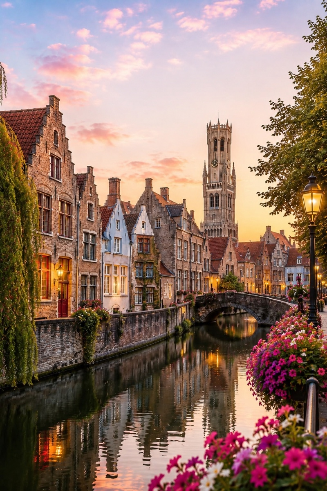

Toeristische tours in België, met privéchauffeur
Ontdek de mooiste plekken van België — Brussel, Brugge, Gent, Antwerpen — en de grote historische plaatsen van de Eerste en Tweede Wereldoorlog, van Ieper tot Bastenaken en de Franse kust, met een privéchauffeur die de regio kent en u afzet en weer ophaalt op de afgesproken plaatsen (professionele gids optioneel). Een elegante manier om te bezoeken, op uw tempo, zonder de beperkingen van het openbaar vervoer of zelf te moeten rijden.
Een rondrit afgestemd op uw programma
Transfer heen en terug
Eén stad, heen en terug op één dag — eenvoudig en rechtstreeks.
Rondrit langs meerdere steden
Brussel, Brugge, Gent en Antwerpen in één uitstap.
Meerdaagse formule
Dezelfde chauffeur voor de hele duur van uw toeristische verblijf.
Chauffeur ter beschikking
De chauffeur wacht bij elke etappe, zonder tijdsdruk.
Reserveer uw toeristische tour
Geef ons de gewenste steden en de duur door — wij stellen u een route op maat voor.